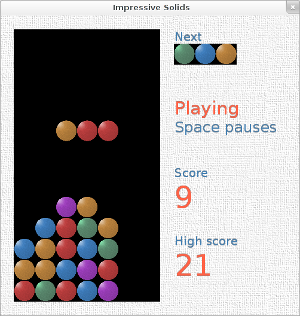

Impressive Solids: делаем игру на C# под OpenGL, часть II

В первой части разработки тетрисоподобной игры Impressive Solids мы реализовали основную часть геймплея, уделив минимальное внимание внешнему виду приложения. Мы и OpenGL-то почти не использовали, всего и делали, что рисовали цветной прямоугольник. Пришла пора заняться оформлением, а также реализовать подсчёт очков и хранение рекорда (high score). Ну что, поехали дальше.
Picture This
Займёмся текстурами. Нам нужно, во-первых, натянуть что-нибудь на фон окна, а во-вторых, сделать приятно выглядящие блоки (сейчас это просто цветные прямоугольники). Понятное дело, сначала надо изготовить текстуры. В этом нам поможет GIMP. Если у вас нет желания заниматься графикой, можете просто скачатьархив с готовыми текстурами и переходить к следующему этапу.
Но сперва отмечу один очень важный нюанс. До версии OpenGL 2.0 каждый из размеров текстуры обязан был быть равным степени двойки (т. е. 64×64, 512×256; это POT-текстуры, от англ. power of two). Если текстуры произвольного размера (NPOT-текстуры) не поддерживаются видеокартой или драйвером видеокарты, такая текстура не будет работать. Это имеет место, например, для встроенных видеокарт Intel под Windows XP.
Чтобы гарантированно обезопасить себя от этой проблемы, самое простое и удобное решение — всегда использовать POT-текстуры. Однако это не всегда возможно, и дальше, когда мы дойдём до вывода текста, нам придётся заняться этим моментом.
Итак, создаём в GIMP пустое (белое) изображение 512×512, далее: Filters → Artistic → Apply Canvas, затем: Filters → Map → Make Seamless. Всё, background.png готов.
Блоки попытаемся изобразить как мраморные шарики, в этом нам поможет Дэниел Кетчум. Создаём прозрачное изображение где-то 300×300, делаем круглое выделение на весь диаметр холста. Инструмент Bucket Fill → Pattern fill → выбираем текстуру Marble #1, заливаем круг. Далее: Filters → Distort → Lens Distortion, крутим Main на максимум, а Edge — на минимум, OK. Затем: Filters → Light and Shadow → Lighting Effects, ставим свет так, чтобы создать эффект трёхмерного шара. Кадрируем, чтобы не было пустых полей. Масштабируем до размера 256×256. Потом при помощи Colors → Colorize делаем пять разных цветов (крутим Hue) и сохраняем как 0.png, 1.png… 4.png (помним, что в игровой модели мы решили обозначать разные цвета блоков целым числом начиная с нуля).
Теперь надо занести эти файлы в проект Visual C# Express / MonoDevelop. Сперва через контекстное меню создаём New Folder с именем textures, а в нём — solids. Через файловый менеджер помещаем в textures файл background.png, а в textures/solids — файлы 0.png… 4.png. Через контекстное меню в среде разработки добавляем эти файлы в проект в соответствующие папки.
После этого необходимо для всех файлов *.png в проекте открыть Properties и выставить Build Action: Content; Copy to Output Directory: Copy if newer.
Задействуем текстуры в OpenGL. Сама OpenGL не оперирует графическими файлами, нужно своими средствами (в этом поможет System.Drawing.Bitmap) загрузить текстуру в память, получить из неё бинарный bitmap и его передать в OpenGL, которая сохранит текстуру уже в своей памяти. В дальнейшем обращаться к текстуре можно будет через целочисленный handle (который сперва надо зарезервировать).
Инкапсулируем этот механизм в виде нового класса Texture.
using System;
using System.Drawing;
using System.Drawing.Imaging;
using OpenTK.Graphics.OpenGL;
namespace ImpressiveSolids {
public class Texture : IDisposable {
public int GlHandle { get; protected set; }
public int Width { get; protected set; }
public int Height { get; protected set; }
public Texture(Bitmap Bitmap) {
GlHandle = GL.GenTexture();
Bind();
Width = Bitmap.Width;
Height = Bitmap.Height;
var BitmapData = Bitmap.LockBits(new Rectangle(0, 0, Bitmap.Width, Bitmap.Height), ImageLockMode.ReadOnly, System.Drawing.Imaging.PixelFormat.Format32bppArgb);
GL.TexImage2D(TextureTarget.Texture2D, 0, PixelInternalFormat.Rgba, BitmapData.Width, BitmapData.Height, 0, OpenTK.Graphics.OpenGL.PixelFormat.Bgra, PixelType.UnsignedByte, BitmapData.Scan0);
Bitmap.UnlockBits(BitmapData);
GL.TexParameter(TextureTarget.Texture2D, TextureParameterName.TextureMinFilter, (int)TextureMinFilter.Linear);
GL.TexParameter(TextureTarget.Texture2D, TextureParameterName.TextureMagFilter, (int)TextureMagFilter.Linear);
}
public void Bind() {
GL.BindTexture(TextureTarget.Texture2D, GlHandle);
}
#region Disposable
private bool Disposed = false;
public void Dispose() {
Dispose(true);
GC.SuppressFinalize(this);
}
protected virtual void Dispose(bool Disposing) {
if (!Disposed) {
if (Disposing) {
GL.DeleteTexture(GlHandle);
}
Disposed = true;
}
}
~Texture() {
Dispose(false);
}
#endregion
}
}
В Game загрузим текстуры.
using System.Drawing;
// . . .
private Texture TextureBackground;
private Texture[] ColorTextures = new Texture[ColorsCount];
public Game()
: base(NominalWidth, NominalHeight, GraphicsMode.Default, "Impressive Solids") {
VSync = VSyncMode.On;
Keyboard.KeyDown += new EventHandler<KeyboardKeyEventArgs>(OnKeyDown);
TextureBackground = new Texture(new Bitmap("textures/background.png"));
for (var i = 0; i < ColorsCount; i++) {
ColorTextures[i] = new Texture(new Bitmap("textures/solids/" + i + ".png"));
}
}
Изменим рендеринг. Надо включить текстуры в целом, а также режим прозрачности. Затем перед тем, как задать координаты прямоугольника, надо выбрать (bind) соответствующую текстуру. Перед каждой точкой (vertex) надо задать соответствующие координаты текстуры (считается, что (1; 1) — правый нижний угол текстуры).
protected override void OnLoad(EventArgs E) {
base.OnLoad(E);
GL.Enable(EnableCap.Texture2D);
GL.Enable(EnableCap.Blend);
GL.BlendFunc(BlendingFactorSrc.SrcAlpha, BlendingFactorDest.OneMinusSrcAlpha);
New();
}
protected override void OnRenderFrame(FrameEventArgs E) {
// . . .
GL.LoadMatrix(ref Modelview);
RenderBackground();
for (var X = 0; X < MapWidth; X++) {
for (var Y = 0; Y < MapHeight; Y++) {
if (Map[X, Y] >= 0) {
RenderSolid(X, Y + ImpactFallOffset[X, Y], Map[X, Y]);
}
}
}
if (GameStateEnum.Fall == GameState) {
for (var i = 0; i < StickLength; i++) {
RenderSolid(StickPosition.X + i, StickPosition.Y, StickColors[i]);
}
}
SwapBuffers();
}
private void RenderBackground() {
TextureBackground.Bind();
GL.Color4(Color4.White);
GL.Begin(BeginMode.Quads);
GL.TexCoord2(0, 0);
GL.Vertex2(0, 0);
GL.TexCoord2((float)ClientRectangle.Width / TextureBackground.Width, 0);
GL.Vertex2(ProjectionWidth, 0);
GL.TexCoord2((float)ClientRectangle.Width / TextureBackground.Width, (float)ClientRectangle.Height / TextureBackground.Height);
GL.Vertex2(ProjectionWidth, ProjectionHeight);
GL.TexCoord2(0, (float)ClientRectangle.Height / TextureBackground.Height);
GL.Vertex2(0, ProjectionHeight);
GL.End();
}
private void RenderSolid(float X, float Y, int Color) {
ColorTextures[Color].Bind();
GL.Color4(Color4.White);
GL.Begin(BeginMode.Quads);
GL.TexCoord2(0, 0);
GL.Vertex2(X * SolidSize, Y * SolidSize);
GL.TexCoord2(1, 0);
GL.Vertex2((X + 1) * SolidSize, Y * SolidSize);
GL.TexCoord2(1, 1);
GL.Vertex2((X + 1) * SolidSize, (Y + 1) * SolidSize);
GL.TexCoord2(0, 1);
GL.Vertex2(X * SolidSize, (Y + 1) * SolidSize);
GL.End();
}
Заданный цвет как бы окрашивает, тонирует текстуру, поэтому указываем белый цвет.
Прекрасно, текстуры работают. Коммитим: «Textured background and solids».
Main Street
Теперь надо обозначить стакан. Пусть это будет просто чёрный прямоугольник, поверх фона окна, но за блоками.
private void RenderPipe() {
GL.Disable(EnableCap.Texture2D);
GL.Color4(Color4.Black);
GL.Begin(BeginMode.Quads);
GL.Vertex2(0, 0);
GL.Vertex2(MapWidth * SolidSize, 0);
GL.Vertex2(MapWidth * SolidSize, MapHeight * SolidSize);
GL.Vertex2(0, MapHeight * SolidSize);
GL.End();
GL.Enable(EnableCap.Texture2D);
}
protected override void OnRenderFrame(FrameEventArgs E) {
// . . .
RenderBackground();
RenderPipe();
// . . .
}
Спозиционируем стакан. Пусть он находится слева, с небольшим отступом от краёв окна. Справа от стакана позже разместим дополнительные элементы интерфейса (счёт и т. д.). Однако если окно будет растянуто по ширине, то пусть стакан выдвигается вправо по направлению к центру окна, иначе справа будет слишком много пустого пространства. Напоследок запретим делать окно меньше NominalWidth × NominalHeight (это, правда, не будет работать под X window system).
private const int NominalWidth = 500;
private const int NominalHeight = 500;
protected override void OnResize(EventArgs E) {
// . . .
if (ClientSize.Width < NominalWidth) {
ClientSize = new Size(NominalWidth, ClientSize.Height);
}
if (ClientSize.Height < NominalHeight) {
ClientSize = new Size(ClientSize.Width, NominalHeight);
}
}
protected override void OnRenderFrame(FrameEventArgs E) {
// . . .
RenderBackground();
var PipeMarginY = (ProjectionHeight - MapHeight * SolidSize) / 2f;
var PipeMarginX = (NominalHeight - MapHeight * SolidSize) / 2f;
var Overwidth = ProjectionWidth - ProjectionHeight * (float)NominalWidth / NominalHeight;
if (Overwidth > 0) {
GL.Translate(Math.Min(Overwidth, (ProjectionWidth - MapWidth * SolidSize) / 2f), PipeMarginY, 0);
} else {
GL.Translate(PipeMarginX, PipeMarginY, 0);
}
RenderPipe();
// . . .
}
Коммитим: «Position and render pipe».
Writing on the Wall
Что же будет справа от стакана? Четыре элемента: следующая палка; статус игры (там будет сообщение «Playing», «Paused» или «Game Over»); текущий счёт; рекордный счёт.
Большинство из этого — текст, соответственно, нам нужно научиться выводить текст средствами OpenGL. Сама OpenGL ничего такого не умеет. Часто встречаются упоминания о том, будто в OpenTK есть для этой цели удобный класс TextPrinter. Это было давно и неправда. Сейчас рекомендуемым методом отображения текста является следующий: сделать bitmap с текстом (средствами System.Drawing.Graphics.DrawString или др.) и натянуть её как текстуру.
Напишем свой класс TextRenderer, который будет создавать Bitmap и затем Texture на её основе. Но сначала придётся озаботиться вышеупомянутой проблемой NPOT-размерных текстур, поскольку мы не знаем наперёд, какой размер получится у динамически создаваемой надписи. Метод довольно простой: если NPOT-текстуры не поддерживаются, то надо при загрузке картинки делать POT-размерную текстуру, как бы с полями. Например, если загружаем картинку 300×200, то генерируем текстуру 512×256, на которой в левом верхнем углу будет наша картинка, а остальное пространство будет пустовать. И при накладывании текстуры необходимо будет учесть, что левый нижний угол картинки имеет координаты не (1; 1), а (300/512; 200/256).
public class Texture : IDisposable {
public int GlHandle { get; protected set; }
public int Width { get; protected set; }
public int Height { get; protected set; }
#region NPOT
private static bool? CalculatedSupportForNpot;
public static bool NpotIsSupported {
get {
if (!CalculatedSupportForNpot.HasValue) {
CalculatedSupportForNpot = false;
int ExtensionsCount;
GL.GetInteger(GetPName.NumExtensions, out ExtensionsCount);
for (var i = 0; i < ExtensionsCount; i++) {
if ("GL_ARB_texture_non_power_of_two" == GL.GetString(StringName.Extensions, i)) {
CalculatedSupportForNpot = true;
break;
}
}
}
return CalculatedSupportForNpot.Value;
}
}
public int PotWidth {
get {
return NpotIsSupported ? Width : (int)Math.Pow(2, Math.Ceiling(Math.Log(Width, 2)));
}
}
public int PotHeight {
get {
return NpotIsSupported ? Height : (int)Math.Pow(2, Math.Ceiling(Math.Log(Height, 2)));
}
}
#endregion
public Texture(Bitmap Bitmap) {
// . . .
var BitmapData = Bitmap.LockBits(new Rectangle(0, 0, Bitmap.Width, Bitmap.Height), ImageLockMode.ReadOnly, System.Drawing.Imaging.PixelFormat.Format32bppArgb);
GL.TexImage2D(TextureTarget.Texture2D, 0, PixelInternalFormat.Rgba, PotWidth, PotHeight, 0, OpenTK.Graphics.OpenGL.PixelFormat.Bgra, PixelType.UnsignedByte, IntPtr.Zero);
GL.TexSubImage2D(TextureTarget.Texture2D, 0, 0, 0, BitmapData.Width, BitmapData.Height, OpenTK.Graphics.OpenGL.PixelFormat.Bgra, PixelType.UnsignedByte, BitmapData.Scan0);
Bitmap.UnlockBits(BitmapData);
// . . .
}
// . . .
}
Теперь — TextRenderer. Код кажется длинным, но на самом деле всё просто. Здесь делаем четыре основные вещи: задаём параметры текста, измеряем его размеры, отрисовываем текст в текстуру и, наконец, накладываем текстуру на прозрачный прямоугольник.
using System;
using System.Drawing;
using System.Drawing.Text;
using OpenTK.Graphics;
using OpenTK.Graphics.OpenGL;
namespace ImpressiveSolids {
class TextRenderer {
private Font FontValue;
private string LabelValue;
private bool NeedToCalculateSize, NeedToRenderTexture;
private Texture Texture;
private int CalculatedWidth, CalculatedHeight;
public Font Font {
get {
return FontValue;
}
set {
FontValue = value;
NeedToCalculateSize = true;
NeedToRenderTexture = true;
}
}
public string Label {
get {
return LabelValue;
}
set {
if (value != LabelValue) {
LabelValue = value;
NeedToCalculateSize = true;
NeedToRenderTexture = true;
}
}
}
public int Width {
get {
if (NeedToCalculateSize) {
CalculateSize();
}
return CalculatedWidth;
}
}
public int Height {
get {
if (NeedToCalculateSize) {
CalculateSize();
}
return CalculatedHeight;
}
}
public Color4 Color = Color4.Black;
public TextRenderer(Font Font) {
this.Font = Font;
}
public TextRenderer(Font Font, Color4 Color) {
this.Font = Font;
this.Color = Color;
}
public TextRenderer(Font Font, string Label) {
this.Font = Font;
this.Label = Label;
}
public TextRenderer(Font Font, Color4 Color, string Label) {
this.Font = Font;
this.Color = Color;
this.Label = Label;
}
private void CalculateSize() {
using (var Bitmap = new Bitmap(1, 1)) {
using (Graphics Graphics = Graphics.FromImage(Bitmap)) {
var Measures = Graphics.MeasureString(Label, Font);
CalculatedWidth = (int)Math.Ceiling(Measures.Width);
CalculatedHeight = (int)Math.Ceiling(Measures.Height);
}
}
NeedToCalculateSize = false;
}
public void Render() {
if ((null == Label) || ("" == Label)) {
return;
}
if (NeedToRenderTexture) {
using (var Bitmap = new Bitmap(Width, Height)) {
var Rectangle = new Rectangle(0, 0, Bitmap.Width, Bitmap.Height);
using (Graphics Graphics = Graphics.FromImage(Bitmap)) {
Graphics.Clear(System.Drawing.Color.Transparent);
Graphics.TextRenderingHint = TextRenderingHint.AntiAliasGridFit;
Graphics.DrawString(Label, Font, Brushes.White, Rectangle);
if (null != Texture) {
Texture.Dispose();
}
Texture = new Texture(Bitmap);
}
}
NeedToRenderTexture = false;
}
Texture.Bind();
GL.Color4(Color);
GL.Begin(BeginMode.Quads);
GL.TexCoord2(0, 0);
GL.Vertex2(0, 0);
GL.TexCoord2((float)Texture.Width / Texture.PotWidth, 0);
GL.Vertex2(Width, 0);
GL.TexCoord2((float)Texture.Width / Texture.PotWidth, (float)Texture.Height / Texture.PotHeight);
GL.Vertex2(Width, Height);
GL.TexCoord2(0, (float)Texture.Height / Texture.PotHeight);
GL.Vertex2(0, Height);
GL.End();
}
}
}
Выведем кое-что справа от стакана.
using System.Drawing.Text;
// . . .
private int Score;
private int HighScore;
private TextRenderer NextStickLabel, ScoreLabel, ScoreRenderer, HighScoreLabel, HighScoreRenderer, GameOverLabel, GameOverHint;
public Game()
// . . .
var LabelFont = new Font(new FontFamily(GenericFontFamilies.SansSerif), 20, GraphicsUnit.Pixel);
var LabelColor = Color4.SteelBlue;
NextStickLabel = new TextRenderer(LabelFont, LabelColor, "Next");
ScoreLabel = new TextRenderer(LabelFont, LabelColor, "Score");
HighScoreLabel = new TextRenderer(LabelFont, LabelColor, "High score");
var ScoreFont = new Font(new FontFamily(GenericFontFamilies.SansSerif), 50, GraphicsUnit.Pixel);
var ScoreColor = Color4.Tomato;
ScoreRenderer = new TextRenderer(ScoreFont, ScoreColor);
HighScoreRenderer = new TextRenderer(ScoreFont, ScoreColor);
var GameStateFont = new Font(new FontFamily(GenericFontFamilies.SansSerif), 30, GraphicsUnit.Pixel);
var GameStateColor = Color4.Tomato;
GameOverLabel = new TextRenderer(GameStateFont, GameStateColor, "Game over");
var GameStateHintFont = new Font(new FontFamily(GenericFontFamilies.SansSerif), 25, GraphicsUnit.Pixel);
var GameStateHintColor = Color4.SteelBlue;
GameOverHint = new TextRenderer(GameStateHintFont, GameStateHintColor, "Press Enter");
}
protected override void OnRenderFrame(FrameEventArgs E) {
// . . .
GL.Translate(MapWidth * SolidSize + PipeMarginX, 0, 0);
NextStickLabel.Render();
// TODO вывести собственно next stick
GL.Translate(0, MapHeight * SolidSize / 4f, 0);
if (GameStateEnum.GameOver == GameState) {
GameOverLabel.Render();
GL.Translate(0, GameOverLabel.Height, 0);
GameOverHint.Render();
GL.Translate(0, -GameOverLabel.Height, 0);
}
GL.Translate(0, MapHeight * SolidSize / 4f, 0);
ScoreLabel.Render();
GL.Translate(0, ScoreLabel.Height, 0);
ScoreRenderer.Label = Score.ToString();
ScoreRenderer.Render();
GL.Translate(0, -ScoreLabel.Height, 0);
GL.Translate(0, MapHeight * SolidSize / 4f, 0);
HighScoreLabel.Render();
GL.Translate(0, HighScoreLabel.Height, 0);
HighScoreRenderer.Label = HighScore.ToString();
HighScoreRenderer.Render();
SwapBuffers();
}
MapHeight * SolidSize / 4f — это четверть высоты стакана, мы каждый раз спускаемся ниже на это расстояние, чтобы изобразить один из четырёх элементов интерфейса. Кроме того, выведя надпись, мы спускаемся ниже на её высоту, а затем не забываем подняться обратно к исходной точке.
Коммитим: «Text GUI».
Next
Отобразим собственно следующую палку. Для начала, правда, надо немного изменить модель, потому что сейчас у нас следующая палка генерируется в момент начала следующего хода, а надо, чтобы генерировалась уже на текущем ходу и где-то хранилась.
private int[] NextStickColors;
private void GenerateNextStick() {
for (var i = 0; i < StickLength; i++) {
StickColors[i] = NextStickColors[i];
NextStickColors[i] = Rand.Next(ColorsCount);
}
StickPosition.X = (float)Math.Floor((MapWidth - StickLength) / 2d);
StickPosition.Y = 0;
}
private void New() {
// . . .
StickColors = new int[StickLength];
NextStickColors = new int[StickLength];
GenerateNextStick();
GenerateNextStick(); // because 1st call makes current stick all zeros
GameState = GameStateEnum.Fall;
}
Для отображения воспользуемся методом RenderSolid, всё очень просто.
protected override void OnRenderFrame(FrameEventArgs E) {
// . . .
NextStickLabel.Render();
GL.Translate(0, NextStickLabel.Height, 0);
RenderNextStick();
GL.Translate(0, -NextStickLabel.Height, 0);
// . . .
}
public void RenderNextStick() {
GL.Disable(EnableCap.Texture2D);
GL.Color4(Color4.Black);
GL.Begin(BeginMode.Quads);
GL.Vertex2(0, 0);
GL.Vertex2(StickLength * SolidSize, 0);
GL.Vertex2(StickLength * SolidSize, SolidSize);
GL.Vertex2(0, SolidSize);
GL.End();
GL.Enable(EnableCap.Texture2D);
for (var i = 0; i < StickLength; i++) {
RenderSolid(i, 0, NextStickColors[i]);
}
}
Готово, коммитим: «Render next stick».
The Score
Займёмся подсчётом очков. Надо давать больше очков за длинные линии, за одновременное уничтожение нескольких линий, за последовательное уничтожение нескольких линий в рамках одного хода. Это заинтересует игроков строить сложные комбинации, добавит игре интереса.
Формулы ниже выведены навскидку, их, конечно, надо будет ещё проверить на этапе бета-тестирования, посмотреть на отзывы игроков.
private int TotalDestroyedThisMove;
private void New() {
// . . .
Score = 0;
TotalDestroyedThisMove = 0;
}
protected override void OnUpdateFrame(FrameEventArgs E) {
// . . .
if (Destroyables.Count > 0) {
foreach (var Coords in Destroyables) {
Map[(int)Coords.X, (int)Coords.Y] = -1;
}
Score += (int)Math.Ceiling(Destroyables.Count + Math.Pow(1.5, Destroyables.Count - 3) - 1) + TotalDestroyedThisMove;
TotalDestroyedThisMove += Destroyables.Count;
Stabilized = false;
}
// . . .
GenerateNextStick();
TotalDestroyedThisMove = 0;
GameState = GameStateEnum.Fall;
// . . .
}
По окончанию игры будем обновлять рекорд (если он побит) и записывать в файл, а при запуске приложения — читать текущий рекорд из файла.
using System.IO;
// . . .
private string HighScoreFilename;
public Game() {
// . . .
var ConfigDirectory = Environment.GetFolderPath(Environment.SpecialFolder.ApplicationData) + Path.DirectorySeparatorChar + "ImpressiveSolids";
if (!Directory.Exists(ConfigDirectory)) {
Directory.CreateDirectory(ConfigDirectory);
}
HighScoreFilename = ConfigDirectory + Path.DirectorySeparatorChar + "HighScore.dat";
if (File.Exists(HighScoreFilename)) {
using (var Stream = new FileStream(HighScoreFilename, FileMode.Open)) {
using (var Reader = new BinaryReader(Stream)) {
try {
HighScore = Reader.ReadInt32();
} catch (IOException) {
HighScore = 0;
}
}
}
} else {
HighScore = 0;
}
}
protected override void OnUpdateFrame(FrameEventArgs E) {
// . . .
if (GameOver) {
GameState = GameStateEnum.GameOver;
if (Score > HighScore) {
HighScore = Score;
using (var Stream = new FileStream(HighScoreFilename, FileMode.Create)) {
using (var Writer = new BinaryWriter(Stream)) {
Writer.Write(HighScore);
}
}
}
} else {
// . . .
}
Коммитим: «Calculating score, storing high score».
Heaven Can Wait
Напоследок сделаем возможность ставить игру на паузу.
Паузу не получится сделать как состояние (GameStateEnum), потому что на паузу можно ставить игру как во время падения палки (Fall), так и во время Impact, а из паузы игра должна возвращаться обратно в то состояние, в котором была.
Поэтому введём дополнительный флаг Paused и его обработку в OnUpdateFrame, OnKeyDown, OnRenderFrame.
private bool Paused;
private TextRenderer PauseLabel, UnpauseHint, PlayingGameLabel, PauseHint;
public Game()
// . . .
var GameStateFont = new Font(new FontFamily(GenericFontFamilies.SansSerif), 30, GraphicsUnit.Pixel);
var GameStateColor = Color4.Tomato;
GameOverLabel = new TextRenderer(GameStateFont, GameStateColor, "Game over");
PauseLabel = new TextRenderer(GameStateFont, GameStateColor, "Pause");
PlayingGameLabel = new TextRenderer(GameStateFont, GameStateColor, "Playing");
var GameStateHintFont = new Font(new FontFamily(GenericFontFamilies.SansSerif), 25, GraphicsUnit.Pixel);
var GameStateHintColor = Color4.SteelBlue;
GameOverHint = new TextRenderer(GameStateHintFont, GameStateHintColor, "Press Enter");
UnpauseHint = new TextRenderer(GameStateHintFont, GameStateHintColor, "Press Space");
PauseHint = new TextRenderer(GameStateHintFont, GameStateHintColor, "Space pauses");
}
protected override void OnLoad(EventArgs E) {
base.OnLoad(E);
GL.Enable(EnableCap.Texture2D);
GL.Enable(EnableCap.Blend);
GL.BlendFunc(BlendingFactorSrc.SrcAlpha, BlendingFactorDest.OneMinusSrcAlpha);
New();
Paused = true;
}
protected override void OnUpdateFrame(FrameEventArgs E) {
base.OnUpdateFrame(E);
if (Paused) {
return;
}
// . . .
}
protected void OnKeyDown(object Sender, KeyboardKeyEventArgs E) {
if ((GameStateEnum.Fall == GameState) && !Paused) {
// . . .
}
if (((GameStateEnum.Fall == GameState) || (GameStateEnum.Impact == GameState)) && (Key.Space == E.Key)) {
Paused = !Paused;
}
}
protected override void OnRenderFrame(FrameEventArgs E) {
// . . .
GL.Translate(0, MapHeight * SolidSize / 4f, 0);
if (GameStateEnum.GameOver == GameState) {
GameOverLabel.Render();
GL.Translate(0, GameOverLabel.Height, 0);
GameOverHint.Render();
GL.Translate(0, -GameOverLabel.Height, 0);
} else if (Paused) {
PauseLabel.Render();
GL.Translate(0, PauseLabel.Height, 0);
UnpauseHint.Render();
GL.Translate(0, -PauseLabel.Height, 0);
} else {
PlayingGameLabel.Render();
GL.Translate(0, PlayingGameLabel.Height, 0);
PauseHint.Render();
GL.Translate(0, -PlayingGameLabel.Height, 0);
}
// . . .
}
Новую игру при запуске приложения удобно (для игрока) начинать как раз в состоянии паузы.
Используем пробел, а не клавишу Pause, потому что пробел расположен удобнее и о нём всегда помнят, в отличие от Pause, про которую многие даже и не знают. Кроме того, с последней возникают проблемы, в частности, при использовании Punto Switcher.
Коммитим: «Pause».
На этом пока всё. Несомненно, в игре ещё можно доделать много мелких нюансов и частностей. Наверняка всплывут баги, которые нужно будет исправить. Всё это я оставляю читателю на самостоятельное изучение.
На сайте проекта (http://code.google.com/p/impressive-solids/) вы сможете скачать архив (http://impressive-solids.googlecode.com/files/ImpressiveSolids-alpha-2.zip), содержащий состояние игры (исходный код и исполняемый файл) на момент окончания этой статьи, а также получить доступ к репозиторию Mercurial, содержащему в том числе и не вошедшие в статью наработки.